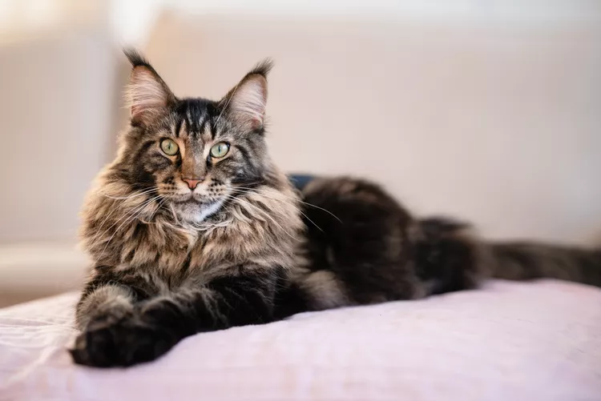

For the third year running, Ragdoll cats have taken the top spot as America’s most popular cat breed. Why? Well just look at that fluffy, long-haired coat, those milky-blue eyes and pointed color patterns! You might be wondering where these cuties got their name – well they go pretty limp when picked up, so along with always being keen for a cwtch (look it up, it’s our new favorite word), their placid and docile disposition makes them all too easy to love.
Maine Coon cats, otherwise known as the gentle giant of the feline world, come in second place in America’s most popular cat breeds. The largest domesticated cat breed (with males weighing in at just over a whopping 18 pounds) originates in North America in – you guessed it – the state of Maine, where they’re the official state cat! It’s not just their size or those stunning, smushy coats that make these cuties so popular though.0 Maine Coons have EXTRA TOES. We aren’t pulling your paw – almost half are born with polydactyl, a condition which means they’re born with more toes than other cats. Why is this such a cool feature? Well they’re even more nimble, stealthy climbers than their normal-toed feline friends.
Ding ding, in at lucky number three are Exotic Shorthair cats – the pinched-face, googly-eyed cuties bred as short-haired versions of the Persian. More popular than their ancestor breed, these fluffballs wear a fur jacket that’s much easier to maintain, only needing a brush around once a week – so much easier for pet parents and cat sitters.
The grandparents of the Exotic Shorthair follow closely behind at number four. Also known as the Persian longhair, these cuties are complete with a coat far fluffier coat than their descendents. Not only are they popular on the cartoon cat scene, Persians are one of the longest-standing domesticated cats. Originally kept as pets in Persia, the cuties were imported to Italy in around 1620, spreading their popularity (and that fur) across the globe.